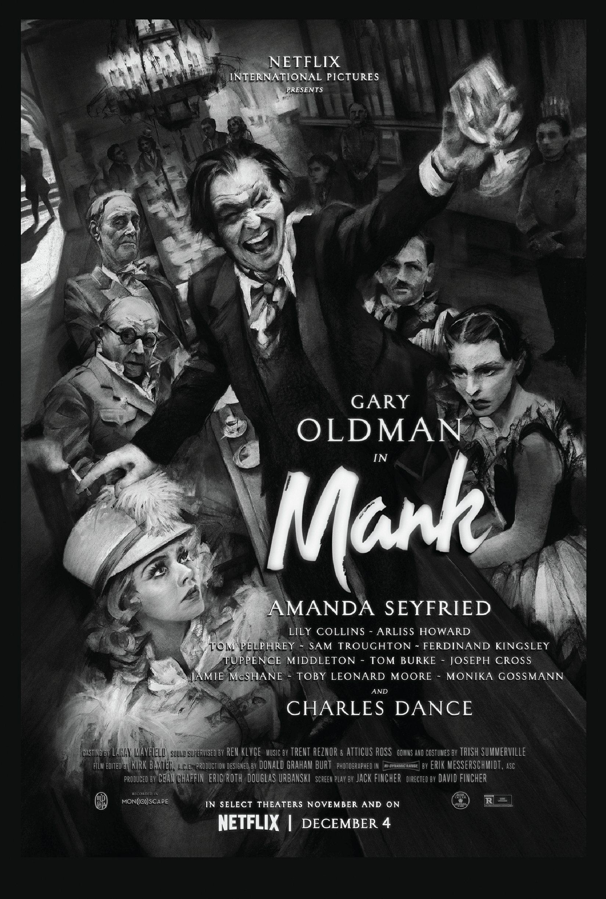
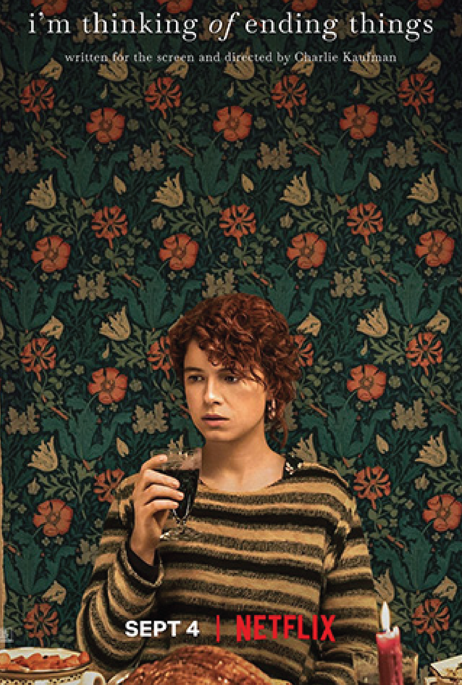
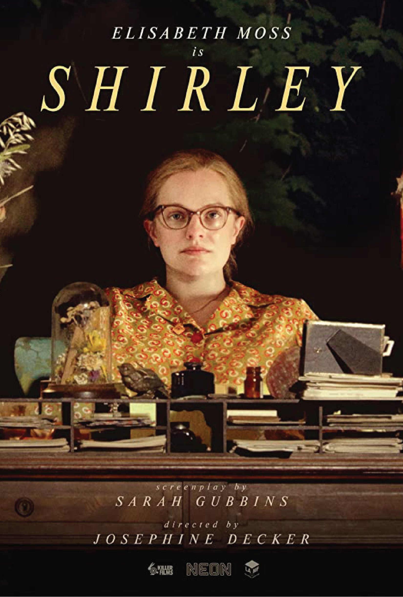
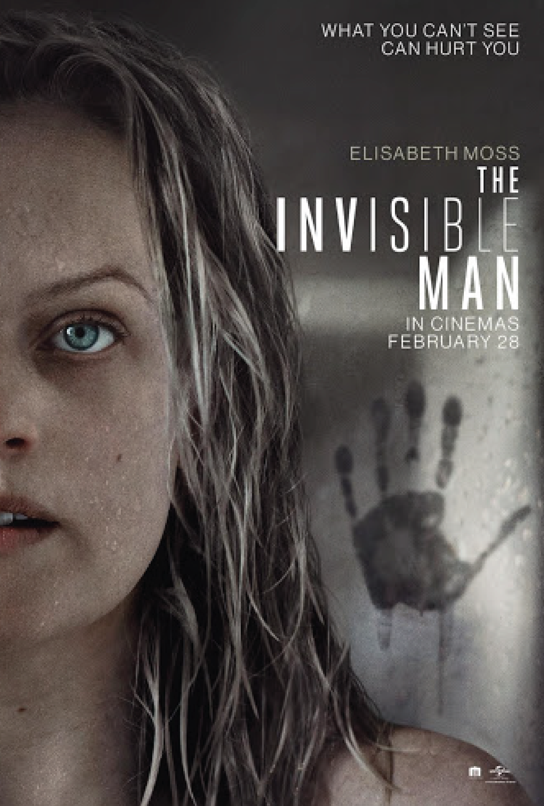
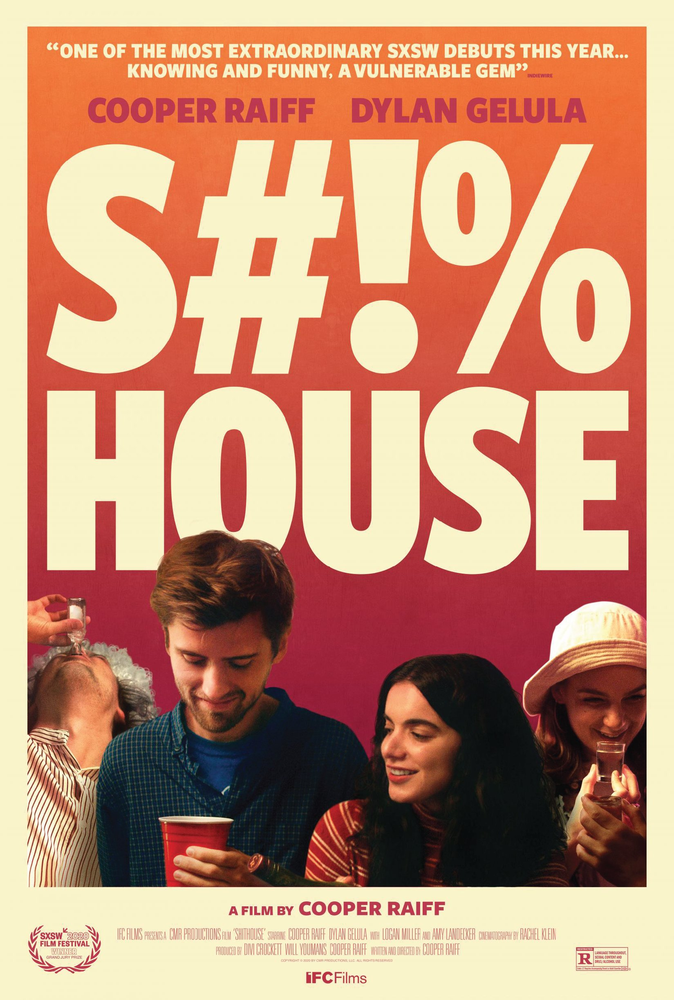

10
Shirley
Unlike the typical biopic, Shirley is a slow-burning story. But it does a nice job of showcasing the complicated and complex mood of Shirley Jackson’s works. Great visual style, unique cinematography, and Elisabeth Moss’s performance make it worth a watch.
08
The Gentlemen
Guy Ritchie has found his flashy style once again with another take on the criminal subculture. Although it tries to be too clever at times, The Gentlemen is another quick-moving story that’s entertaining, funny, violent, and
often vulgar.
06
Dick Johnson Is Dead
This is a must watch for anyone who has or has lost a family member struggling with dementia or Alzheimer’s. It is a distinctive film that celebrates life, pain, and what it means to be human. And I never would have thought a documentary about death could be so funny.
09
Shithouse
Shithouse is a funny, nostalgic, and well-done coming-of-age story acted, directed, and written by Cooper Raiff. It is extremely authentic and very good. Particularly intriguing are the often awkward moments between the starring characters.
07
Palm Springs
Playing off the rules of time set up in Groundhog Day (1993), Palm Springs is a surprisingly fun, and therefore much-needed, movie. It combines comedy and drama, subverts expectations of traditional romance tropes, and is a delight to watch.
As 2020 comes to an end, most of us can agree that it has been quite a difficult year. I often find myself missing the small things—those
that provide a sense of normalcy—like riding the train and going to the movies. But despite most theaters being temporarily shut down, I haven’t stopped enjoying film. I find movies to be the best form of escapism while being stuck at home; they can truly take my attention away from the harsh realities of the past months while simultaneously putting up a mirror to what’s going on today. Here’s a look at what I’ve deemed to be the top 10 movies of this year.
05
Never Rarely Sometimes Always
Never Rarely Sometimes Always provides a firsthand look into
the external pressures put on young women. While it can be a tough watch, it brings an important and insightful message and is intimate and well shot.
04
Borat Subsequent Moviefilm
This sequel could have easily fallen
short of the original, but Sacha Baron Cohen took even more risks and
pulled it off. The movie provides a look into the American social and political landscape of 2020 while being surprisingly heartfelt. And the standout performance comes from Maria Bakalova as Borat’s daughter. Very nice!
03
Mank
Director David Fincher worked from his late father’s screenplay to craft this beautiful love letter to the golden age of Hollywood with a deep dive into the story of Herman J. Mankiewicz, one of the screenwriters of Citizen Kane (1941). Gary Oldman’s standout performance is paired with fantastic cinematography and set design.
02
I'm Thinking of
Ending Things
I’m Thinking of Ending Things is a smart, beautifully made movie that feels chaotic in nature and disconnected at times, but it forces the viewer to think at a deeper level—and it’s almost impossible to forget. The abstract, mysterious story goes against the traditional sense of cohesive exposition and pairs well with our very strange year.
01
The Invisible Man






Back to top
Elisabeth Moss delivers another outstanding performance this year
with her portrayal of Cecilia Kass.
The Invisible Man is a prime example of suspense done effectively, and it plays much like the classic psychological thrillers that came before it. The film, which seamlessly modernizes
H.G. Wells’s original concept, is one of the most intense films I’ve seen in a long time—I was on the edge of my seat from start to finish. The fear of what we can’t see is much more powerful than the fear of what we can.

Justin
designer